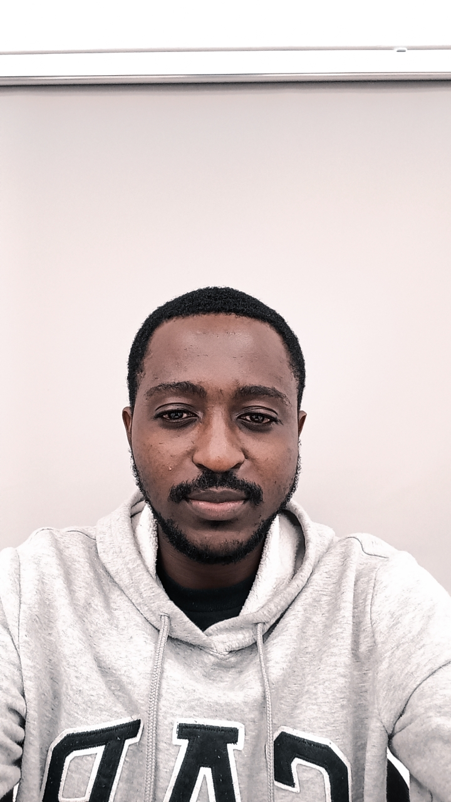

Anderson Okai | WDD 130
Hello, my name is Anderson Okai. I am a software development student at BYU-Idaho, currently living in Ghana. I work remotely as a Family Search Indexer with Bloom. In my free time, I enjoy reading, particularly books on technology and software development. I also like to spend time outdoors, exploring nature and going on hikes with friends.